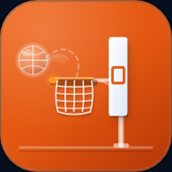

Instala Kortline
Tarda 20 segundos. Después la abres desde su icono, como cualquier app.
📱 ¿Mejor en el móvil?
Apunta con la cámara del móvil a este código: se abre esta misma guía con los pasos para tu teléfono.
¿Otro dispositivo?
🌐 Usar Kortline sin instalar (en el navegador)
Entra con el código del club que te ha dado el responsable. Instalarla no ocupa casi nada y no pide permisos.